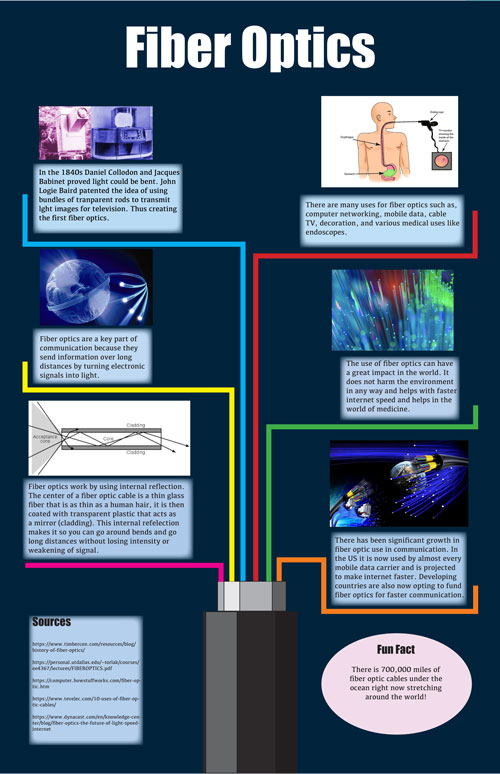

Owen Dommel Infographic Project |
|
| Home Print Project Infographic Project Video Ppoject | |
|
 results from the infographic assignment |
One of the prijects that we were tasked to complete was an infographic that was based on a type of communication technology. I chose to do my project on fiberoptics. |
| ©2023 Owen Dommel | |